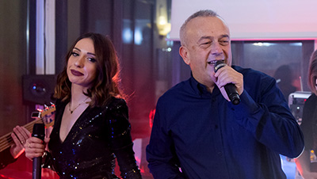
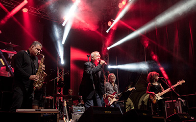

Vedi anche SimplyJoe: www.simplyjoe.eu


LIKE nostra scheda Facebook: www.facebook.com/simplyrock.eu,
per restare aggiornati sui nostri concerti live e vedere i nostri video e foto.
CHI SIAMO
Una band composta da otto esperti musicisti e un sound engineer, alcuni dei quali professionisti
Tributo a Joe Cocker, la più grande voce del blues/rock britannico

Uno spettacolo coinvolgente
SimplyRock: Simply Rock è una band composta da sette musicisti, quasi tutti professionisti, che portano dal vivo un nuovo spettacolo/tributo, basato sui piu’ famosi brani della storia del Rock:
Queen, Pink Floyd, Tina Turner, Joe Cocker, AC/DC and more…
LO SPETTACOLO LIVE: Uno spettacolo innovativo con alcune brevi presentazioni ed aneddoti sui famosi artisti passati, suonando dal vivo molte delle loro canzoni piu’ famose.
I MUSICISTI
Sabrina Sotgiu
Sabrina Sotgiu, figlia d’arte, padre chitarrista e madre cantante, già all'età di sei anni si esibisce cantando davanti al pubblico.
La sua voce è influenzata da artisti appartenenti al mondo del R'n'b, del funk e del soul.
Inizia prestissimo il suo amore per la scrittura di canzoni, che mai l'ha abbandonata e l'ha vista realizzare album di inediti.
Vincitrice di svariati concorsi di canto, la sua carriera artistica inizia col musical per poi diventare voce di diverse band, collezionando numerose esperienze live, con vari musicisti turnisti di fama nazionale.
Numerose anche le esperienze in studio, come voce solista, ma anche come corista, come nel singolo “Gente di Mare” di Umberto Tozzi e molti altri
Claudio Pioli
Claudio Pioli: appassionato di musica e strumenti musicali, attivo da molti anni nel mondo dei concerti live. Le sue esperienze come chitarrista, cantante e tecnico del suono, lo hanno visto protagonista in diversi gruppi musicali pop / rock, anche in eventi internazionali (Italia, Svizzera, Belgio, Est Europa). Nel curriculum musicale anche eventi a Rai3 con Fabio Fazio e nel gruppo spalla di Beppe Grillo (allora comico, appassionato di Blues).
Francesca Mercury
Esperta in Marketing e Comunicazione, presenta spettacoli televisivi e festival musicali, alternando il ruolo di conduttrice a quello di direttore artistico ed è autrice di diversi spettacoli musicali sulla storia della musica.
E’ responsabile organizzativo e di gestione dei media del progetto “CantaMo”, che riunisce gli artisti modenesi a scopi benefici, fa parte del management di TuttoRock, insegna musica e canta come corista in alcune band emiliane.
Il suo Almanacco Mercury, col quale ogni giorno racconta aneddoti e curiosità sulla storia della musica, viene giornalmente pubblicato su svariate pagine social, ed è una rubrica fissa all’interno del programma “Rock Village”.
Nicola Milazzo
All' inizio degli anni '90 diventa chitarrista del cantautore GRAZIANO ROMANI col quale, oltre a qualche centinaio di concerti, registra un disco allo PSYCO STUDIO (MI), insieme a KURT CRESS (MEAT LOAF, SCORPIONS, TINA TURNER) CESAREO e FASO (ELIO E LE STORIE TESE), aprendo anche diversi loro concerti, sotto la produzione di MASSIMO RIVA (VASCO ROSSI, STEVE ROGERS BAND) con il quale ha fatto anche diversi concerti live (1 maggio in piazza a Roma ecc.).
Marco Berni
Musicista professionista, suona piano e tastiere con una conoscenza approfondita delle sonorità e degli effetti. Segue direttamente la programmazione delle testiere. Insegna musica nella provincia di Modena ed ha all’attivo molte esperienze live in diversi generi musicali: dal Jazz al Pop, al Rock / Blues.
Daniele Bagni
Daniele Bagni (Barny) Bassista/Contrabassista ha suonato dal vivo e registrato Cd con alcuni dei piu' famosi Artisti Italiani. Con Litfiba, e Ladri di Biciclette ha partecipanto a due edizioni del festival di San Remo 1989 e 1991 e alla discografia di Paolo Belli solista dal 1992 al 1994. Ha suonato e registrato in studio con famosi musicisti/turnisti nazionali/internazionali, tra i quali Vinnie Colaiuta (Sting, Anastacia, Ramazotti ecc), Alfredo Golino e Paul Gilbert.

Cesare Barbi
Cesare ha competenze professionali che si uniscono al pop inglese, funky e R&B in un mix dinamico dinamico e coinvolgente. Il suo curriculum comprende alcuni tra i più importanti artisti italiani come Ladri di Biciclette, Ridillo, Rio, Cesare Cremonini, Ligabue e altri. Con loro ha suonato dal vivo nei principali palchi nazionali ed internazionali. Collabora in studio con diverse case discografiche.

Federico Bianchi
Federico Bianchi, il sound engineer del gruppo: ingegnere del suono di professione, è conosciuto negli ambienti tecnici della musica per la sua esperienza sul campo con i mixer DiGiCo, che lo ha portato a collaborare con artisti italiani e internazionali che si esibiscono in Italia e in Svizzera. Qui la foto negli studi del teatro Ariston di Sanremo.
CON NOI I MUSICISTI DI JOE COCKER
In alcuni concerti, suonano con noi alcuni dei musicisti del gruppo originale di Joe Cocker con i quali abbiamo sviluppato una straordinaria collaborazione musicale ed una bella amicizia.


{kind=link}
{kind=link}
CONCERTI LIVE


LO SPETTACOLO: Simply Rock si cura di tutti gli aspetti per un concerto live coinvolgente, per continuare a portare con professionalità, nelle piazze, negli eventi importanti e nei migliori locali, i principali brani della Storia del Rock, con lo stesso feeling nei pezzi e la stessa atmosfera dei migliori anni, ma con nuove tecnologie.
GLI EFFETTI SPECIALI: Un moderno spettacolo non è fatto di sola musica: per questo utilizziamo 6 nuovi computers che pilotano giochi di luci sincronizzate, sfondi di effetto, proiezioni, eventuale live streaming su Facebook e YouTube, con l'aiuto delle più recenti tecnologie.
REGIA VIDEO: Lo spettacolo nella versione principale comprende, oltre ai suoni e agli effetti speciali, una regia video dedicata, composta di telecamere fisse e mobili con riprese in tempo reale, sfondi animati, video sincronizzati alla musica per uno spettacolo coinvolgente e professionale.
Per restare aggiornato sui contenuti, le novità e gli eventi della band, puoi mettere LIKE alla nostra pagina facebook:  www.facebook.com/simplyrock.eu
www.facebook.com/simplyrock.eu
CONTATTI


Aspetti tecnici per chi organizza eventi
Per la migliore resa dello spettacolo, disponiamo di tutta la piu’ moderna strumentazione e di una regia video professionale, con nostre telecamere e fisse e mobili e proiezioni / filmati sincronizzati. Sono richieste:
- dimensione minima richiesta del palco di 10m x 6m
- americane posteriore e anteriore
- impianto di amplificazione di qualità e potenza adeguate
- impianto luci adeguato, con nebbiam, fumo, effetti.
Normalmente portiamo il nostro mixer (Digico o Allen Heath, con stage box digitali), già programmato ed ottimizzato per la migliore resa dei nostri suoni e strumenti, e due nostri rack con i radiomicrofoni e gli effetti / per chitarra. Tutti i musicisti suonano sul palco con i nostri radio ear monitors. Questa configurazione, oltre a migliorare la qualità dei suoni, riduce i tempi di installazione degli strumenti sul palco e del soundcheck.
Contattaci per concordare anche gli aspetti tecnici.
Per restare aggiornato sui contenuti, le novità e gli eventi della band, puoi mettere LIKE alla nostra pagina facebook:  www.facebook.com/simplyrock.eu
www.facebook.com/simplyrock.eu